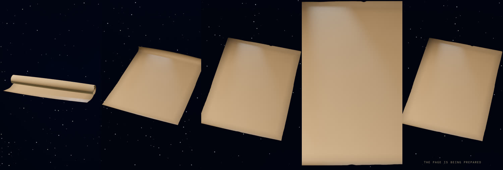

Status ledger · updated 12 October 2026
The rebuild of the manuscript with more motion: a pen you can see, a camera that travels, a pause between the āyāt, and particles and light. Built phone first. Version 1 stays live until this one replaces it.
The dark world (v1's universe sky) and the parchment (v1's surface and material) on a phone, driven by the new engine. Three placeholder chapters exercise the rules: the opening rises out of the dark, scrolling unrolls the page, and the page settles flat. R1 to R4 replace them with designed shots.

| Rule | How v2 does it |
|---|---|
| Scroll picks the scene; time plays it | Scrolling asks for a chapter. The animation plays at its own pace. A fast flick plays up to 2.5× faster and never skips. Going back rewinds at 1.6×. |
| Nothing appears before it is ready | Each chapter lists what it needs. Everything downloads from the first moment; each chapter's pieces are built and their shader programs prepared before it may start. If you arrive early, the page waits and says “The page is being prepared”. |
| One quality setting per device | Phone, laptop or desktop is chosen once when the page opens. It never changes while you watch. On phones the picture size ignores the browser bars sliding in and out. |
| Measured from day one | ?hud=1 shows the frame rate. ?trace=1 records every frame. A scripted phone session plays the piece and checks every frame. |
| The text never changes | v1's text, ink and gold pipeline is carried over unchanged. Rebuilt here, it produces every file byte for byte, and every build checks the seven āyāt letter for letter. |
Headless Brave on this Mac, cold load of the production build, real scroll gestures. The GPU is the Mac's, so these numbers show that nothing stutters or jumps by design. They do not show phone speed. Your phone is the real test.
| Check | Phone 390×660 (WebGPU) | Desktop 1440×900 | Phone (WebGL2) |
|---|---|---|---|
| Frame interval, typical / worst | 16.7 / 16.8 ms | 16.7 / 16.8 ms | 16.7 / 16.8 ms |
| Playhead jumps (steady, flick, gate runs) | 0 | 0 | 0 |
| Chapters skipped during a flick | none | none | none |
| Shaders compiled on a visible frame | 0 | 0 | 0 |
| Ink held back 15 s: page waits, note shows, continues smoothly | yes | yes | yes |
| Intro gone after | 0.3 s | 0.3 s | 0.4–1.5 s |
Frames that stalled while the harness itself was taking a screenshot are listed separately in the report. They are not counted above.
Your R0 check on the phone
?hud=1 added to the address. The frame rate shows at the top left.Made by Thomas Mooney (@Jameel7007).